01
Saúde da pele
Acne, rosácea, manchas, dermatites, psoríase e pintas. Também faço o acompanhamento preventivo da pele, incluindo o rastreamento do câncer de pele.
Conheça a dermatologia clínicaDra. Karoline Rizzatti · Dermatologista em Palhoça
Sou dermatologista, membro titular da Sociedade Brasileira de Dermatologia, e atendo na Clínica Rizzatti, no Passeio Pedra Branca, em Palhoça. Cuido da saúde da pele e dos cabelos e de tratamentos estéticos, sempre a partir de uma consulta individualizada.
Médica dermatologista · CRM/SC 17360 · RQE 13315
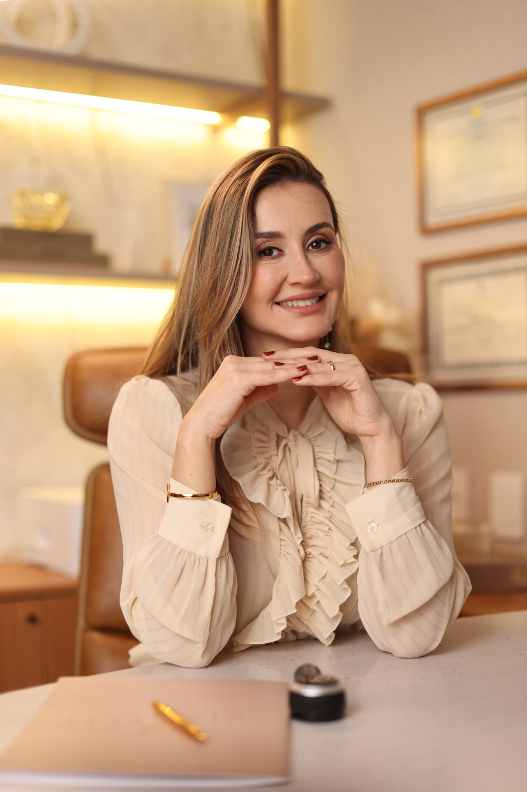
Dra. Karoline RizzattiNa estética, o objetivo é valorizar seus traços sem apagar o que torna você único. Na saúde da pele e dos cabelos, é encontrar a causa antes de indicar o tratamento.
Áreas de cuidado
Dermatologia clínica, capilar e estética no mesmo acompanhamento, com a estrutura e as tecnologias da Clínica Rizzatti.
Acne, rosácea, manchas, dermatites, psoríase e pintas. Também faço o acompanhamento preventivo da pele, incluindo o rastreamento do câncer de pele.
Conheça a dermatologia clínica
Queda, afinamento dos fios e alterações do couro cabeludo. A investigação busca a causa, que pode ser hormonal, nutricional, inflamatória ou genética, para definir o tratamento e o acompanhamento.
Conheça a tricologia
Toxina botulínica, preenchimento, bioestimuladores de colágeno e tecnologias como Liftera®, lasers e radiofrequência microagulhada. Feitos por médica dermatologista e indicados só após consulta.
Conheça os cuidados estéticosComo funciona a consulta
Você não precisa escolher um procedimento antes de vir. A consulta dermatológica orienta as opções de cuidado para seu caso.
Chame a equipe da Clínica Rizzatti no WhatsApp e escolha um horário com a Dra. Karoline.
Conversamos sobre suas queixas, seu histórico e tratamentos anteriores. Depois, examino a pele ou o couro cabeludo.
Você entende o que tem, quais são as opções e o que esperar de cada uma: prazos, cuidados e acompanhamento.
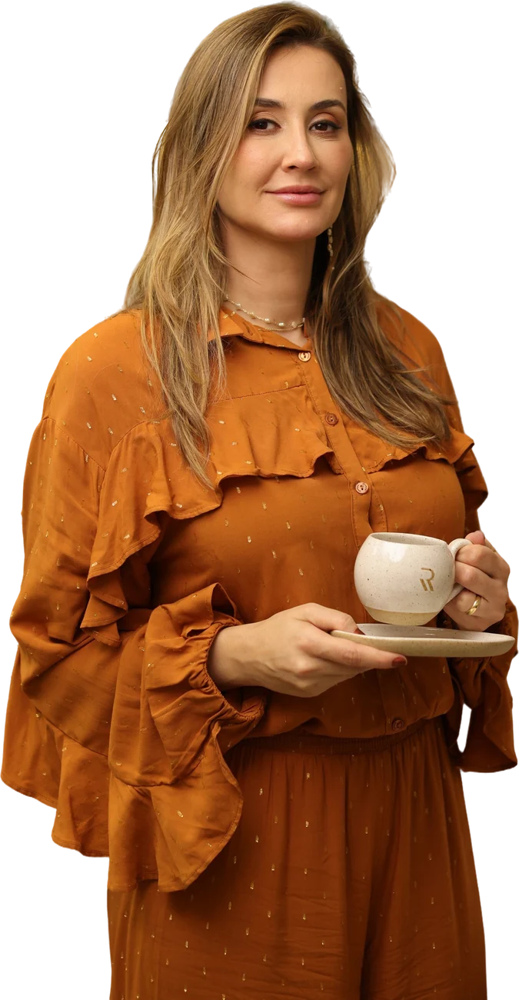
Conheça a médica
Moro na Pedra Branca e abri a Clínica Rizzatti para oferecer, perto de casa, uma dermatologia que muita gente da região só encontrava atravessando a ponte. Acredito em consultas sem pressa e em decisões tomadas junto com cada paciente.
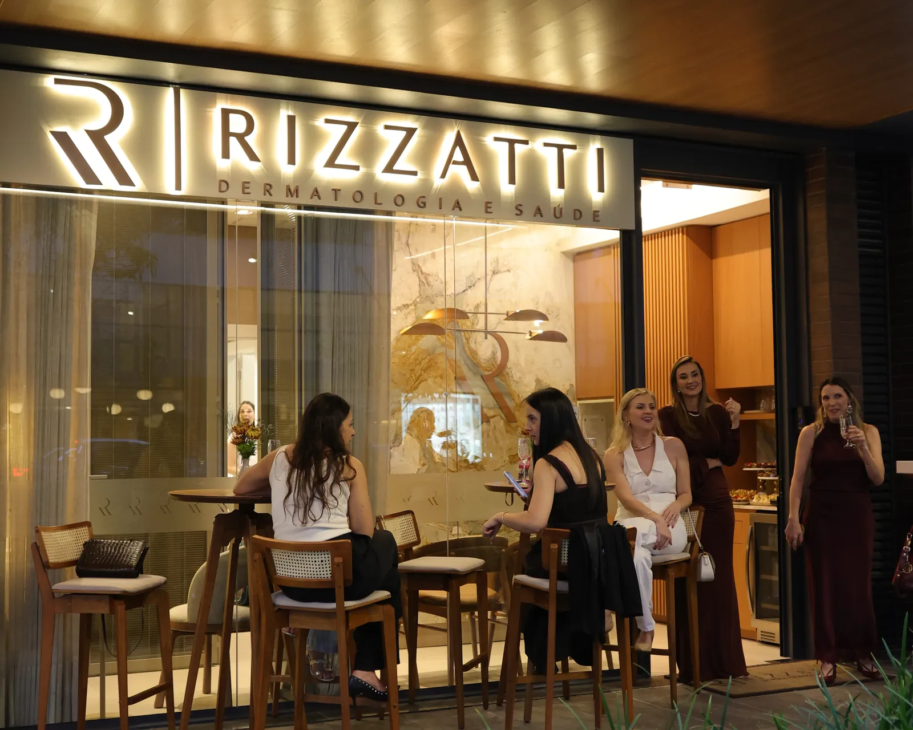
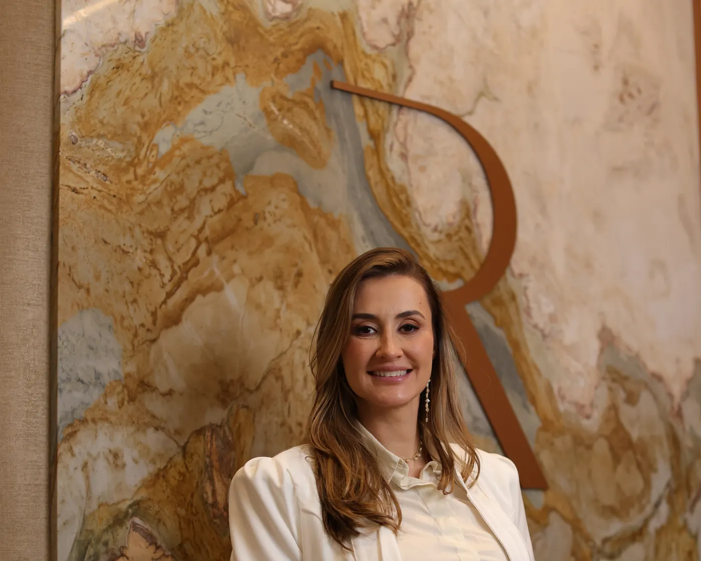
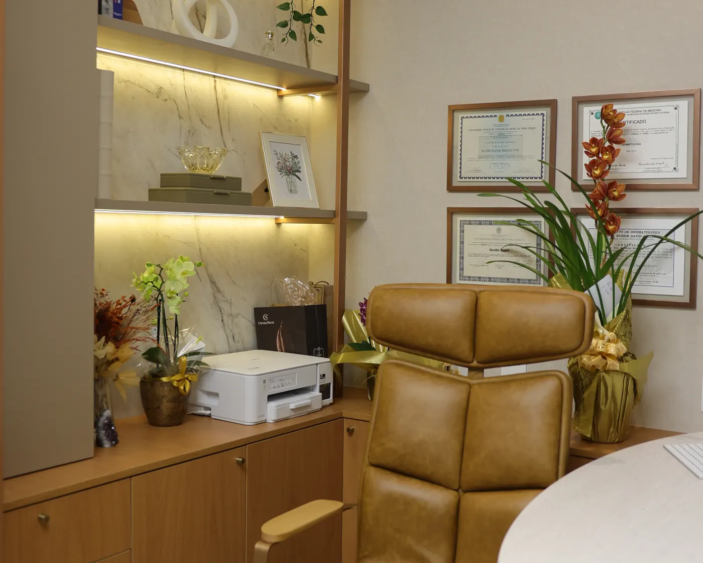
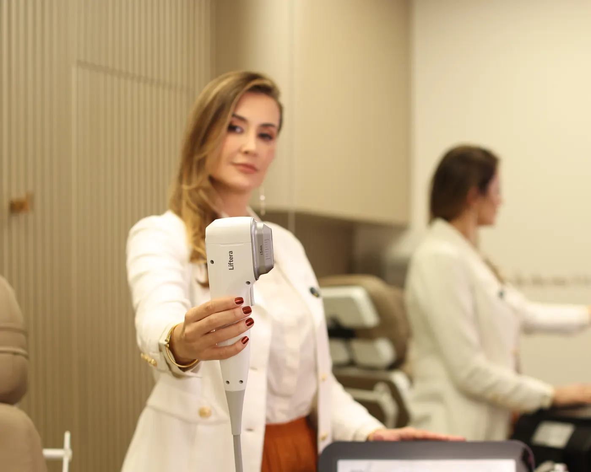
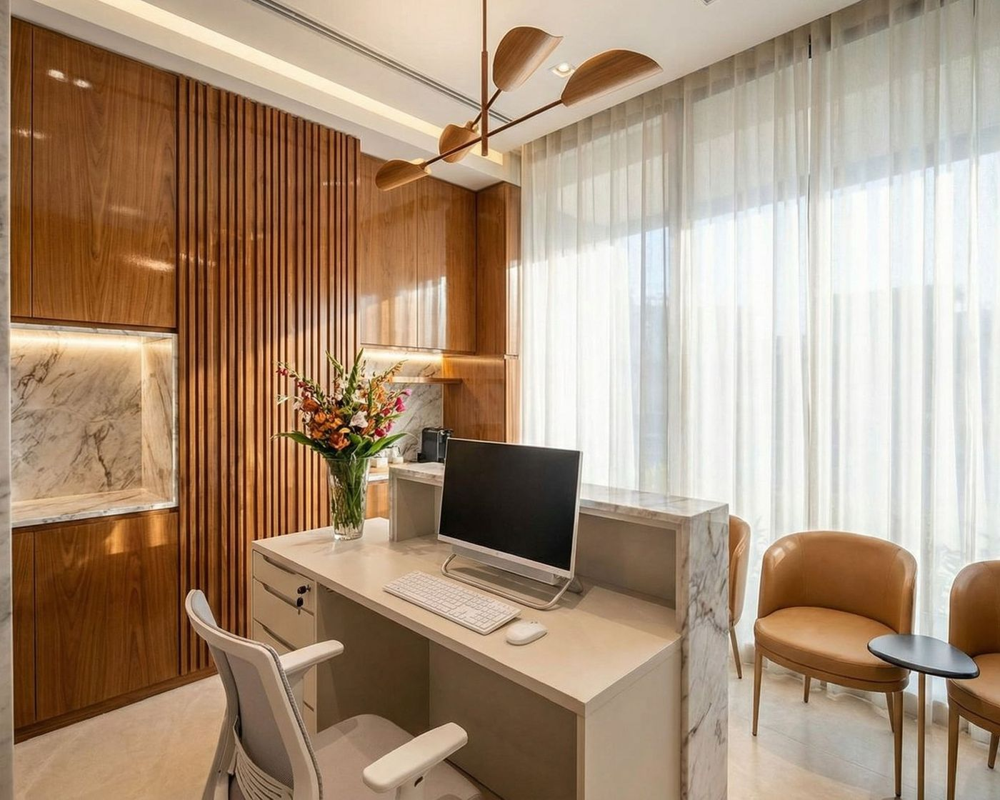
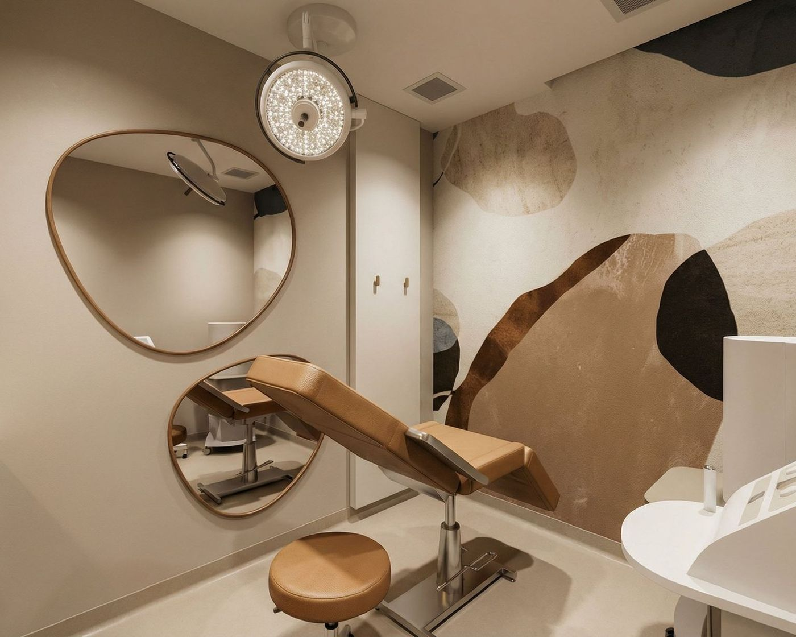
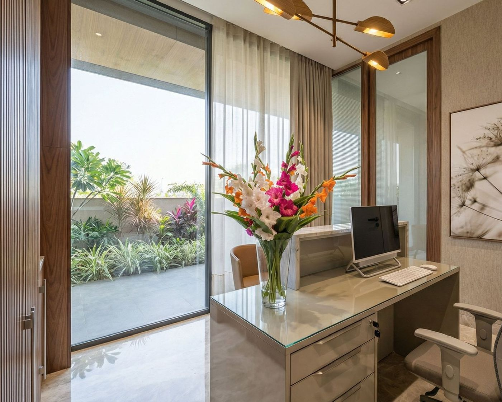
Onde atendo
Atendo na Clínica Rizzatti, no Passeio Pedra Branca, em Palhoça. A clínica reúne consultórios, centro cirúrgico e tecnologias como Liftera®, Etherea MX e laser de CO2.
Rua Rubens de Arruda Ramos, 170 · Loja 03B
Ed. Pátio Civitas · Passeio Pedra Branca · Palhoça, SC
WhatsApp da clínica: (48) 99173-5899
Segunda a sexta, das 8h30 às 12h e das 13h15 às 18h30.
Como chegarDúvidas frequentes
Problemas da pele e dos cabelos, prevenção do câncer de pele, dúvidas sobre a rotina de cuidados e interesse em procedimentos estéticos.
Esse é o princípio do meu trabalho: valorizar seus traços, sem exageros. Produtos, doses e tecnologias são definidos para o seu caso.
Depende do tratamento. A toxina botulínica começa a agir em poucos dias. Bioestimuladores, lasers e tratamentos capilares têm resposta gradual, de semanas a meses. Na consulta, você recebe uma estimativa para o seu caso.
Sim. Os fios e o couro cabeludo são examinados na consulta, e a investigação segue o seu histórico e o que for encontrado no exame.
Entre em contato pelo WhatsApp da Clínica Rizzatti. A equipe informa os horários disponíveis.
Seu cuidado começa aqui
Entre em contato com a equipe da clínica para agendar sua consulta.
Agendar consulta pelo WhatsApp ↗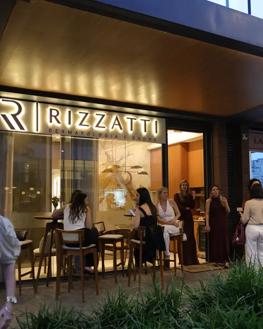
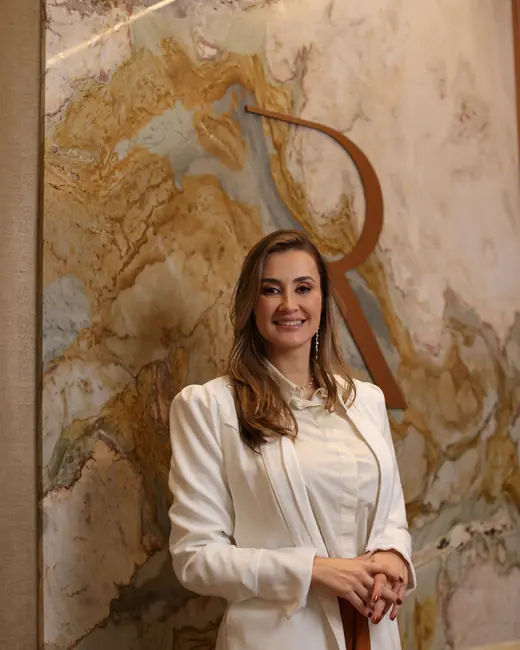
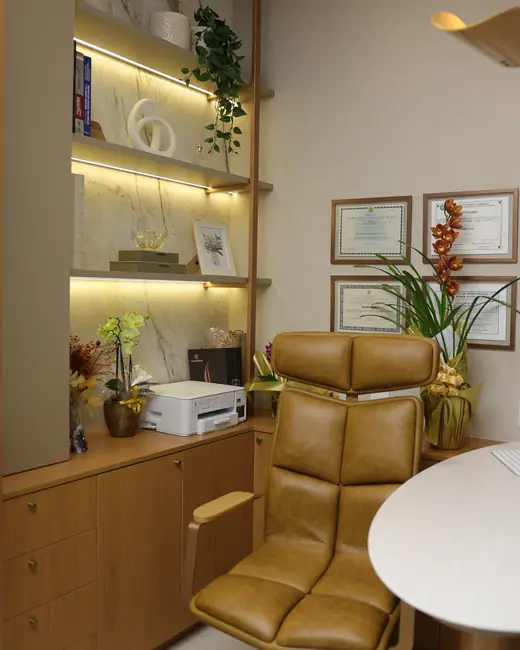
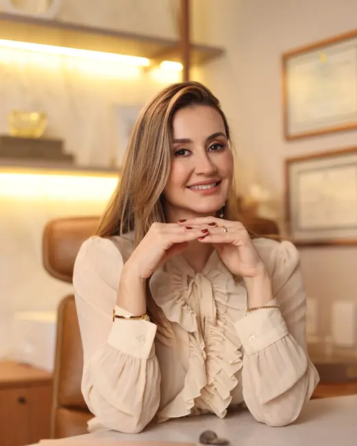
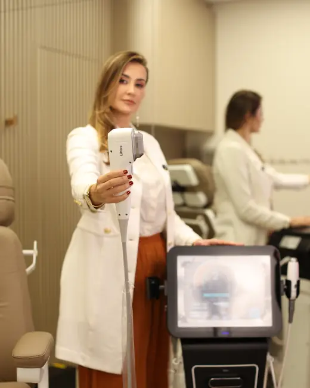
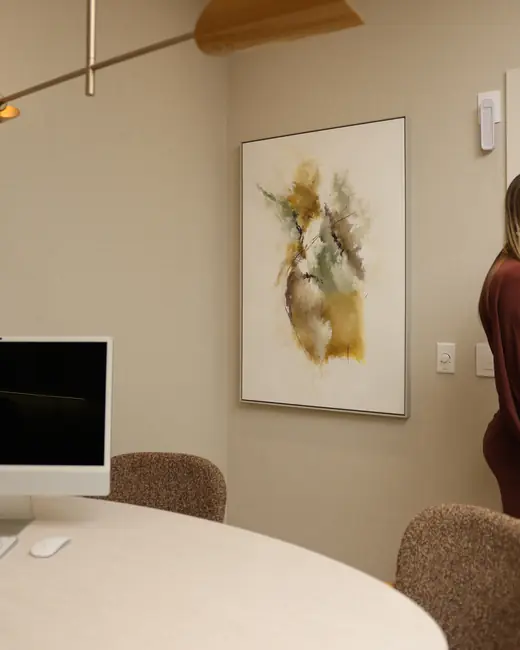
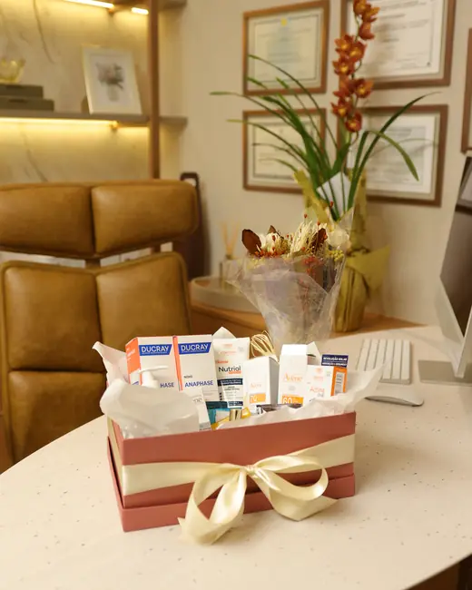